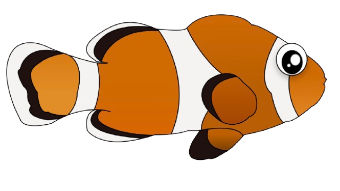

Klovnefisk
Klovnefisken er let at kende – den har en orange krop med hvide striber, som er omkranset af sorte kanter. Den ligner næsten en lille cirkusklovn, og det er faktisk derfor, den har fået sit navn!



Klovnefisken er let at kende – den har en orange krop med hvide striber, som er omkranset af sorte kanter. Den ligner næsten en lille cirkusklovn, og det er faktisk derfor, den har fået sit navn!